Pressure case studies and player reports
1. Scope
This vignette uses the possession-loss hazard \(h\) and its difficulty bands, defined in the composed hazard vignette, to describe how pressure evolves during an individual possession and to summarize how players and teams perform under pressure. It first defines three pressure patterns, illustrates each with an observed possession and counts how often they occur. It then introduces the expected-minus-observed score, which compares the failures of a player or team in elevated-risk situations with those predicted by \(h\), and reports it for teams and players. The results use ten A-League 2024/25 matches.
Context-label meanings and the previous_action convention are defined in the User guide.
2. Pressure patterns
PRESS describes three patterns of how pressure evolves during an individual possession. They are inspired by the pressure metrics of SkillCorner (SkillCorner 2026), and PRESS defines them with the possession-loss hazard \(h\).
- Pressure escape. A possession that begins under pressure, lasts at least 1 s and ends with the pressure relieved: the player leaves a pressured situation (Passarotti 2026b).
- Drawing pressure. A possession that starts from a low-pressure reception, lasts at least 2 s and ends under high pressure: the player receives in space and draws opponents towards the ball (Passarotti 2026a).
- Sustained successful carrying. The player carries the ball successfully for more than 2 seconds while the pressure stays elevated: the player keeps the ball under sustained pressure (Passarotti 2026c).
The patterns are retrospective indicators defined by PRESS and identified with \(h\), as described next.
Identification with h
The unit is the individual possession. All indicators use the 14,919-state band-analysis cohort, covering 7,265 verified outfield, non-shot possessions with a terminal canonical action, as described in the composed-risk benchmark. The overall predictive metrics of \(h\) use a 15,085-state population. Pattern frequencies are reported both over all 7,265 possessions and within the eligible subset for each pattern.
\(h\) is evaluated at the canonical checkpoints defined in Possession segmentation and context: one-second carry starts and pass releases. The initial state of a possession is its start, and the final state is the release of its terminal pass or the start of its final failed carry. A loss at 2.4 s has checkpoints at 0, 1 and 2 s, with the final state at 2 s, and a pass at 2.4 s has its final checkpoint at 2.4 s. The loss is the outcome of the final action and adds no decision state.
A micropossession shorter than one second has a single checkpoint, which is both its initial and final state.
States are classified with the bands of the composed hazard vignette:
- Elevated (Medium or High): \(h\ge0.159104\).
- High: \(h\ge0.292893\).
- Below Medium: \(h<0.159104\).
The implementation uses the exact half-life cutoffs; the rounded values above give the same memberships. A completed pass is terminal individual nonloss, and a failed pass or direct carry loss is terminal individual loss. Foul-suffered and clearance endings have no terminal canonical action and are outside this cohort, and shots are excluded. The patterns are defined as follows.
| Pattern | Operational definition |
|---|---|
| Pressure escape | Elevated initial h, final h below Medium, completed terminal pass, and duration at least 1 s. |
| Drawing pressure | Reception with initial h below Medium, duration at least 2 s, and High at the final state. Any terminal outcome is allowed. Reception includes ordinary pass, free-kick, goal-kick, corner and throw-in reception start types. |
| Sustained successful carrying | At least two successful full one-second carries, each starting in an elevated state; the carries can be non-consecutive and a later action may fail. |
A possession can match more than one pattern. Intervals on their shares are 95% Wilson intervals over distinct possessions (Wilson 1927). The intervals are descriptive and treat possessions of the same match as independent.
Examples
Case A illustrates a pressure escape, Case B drawing pressure and Case C sustained successful carrying. Every canonical evaluated checkpoint has a pitch panel: the attacking direction is stated and velocity arrows are scaled drawing aids. Panel titles show \(h\), its band, the distance of the nearest defender and the number of active annotated on-ball engagements (OBE, defined in the ball-drive benchmark). The values are held-out predictions of the matching outer-fold models at observed tracking states. Cases are selected for interpretation. Geometry, carrier movement, event origin, pass result, pass options and OBE timing were cross-checked against tracking and annotations.
Case A: receiving and advancing out of pressure
Ivan Vujica, Melbourne City–Macarthur FC, 2025-03-07, 66:34.4–66:37.3. Vujica receives in his own defensive third, closed by opponents and with few passing options. He carries the ball 5.35 m forward without losing it, and during the carry a simple passing line opens towards Luke Brattan, to whom he completes the pass. \(h\) follows 31.43% → 36.76% → 11.71%: the two carry checkpoints are High and the release is Low. The sequence illustrates a pressure escape (Passarotti 2026b). The last panel shows Brattan controlling the completed pass.
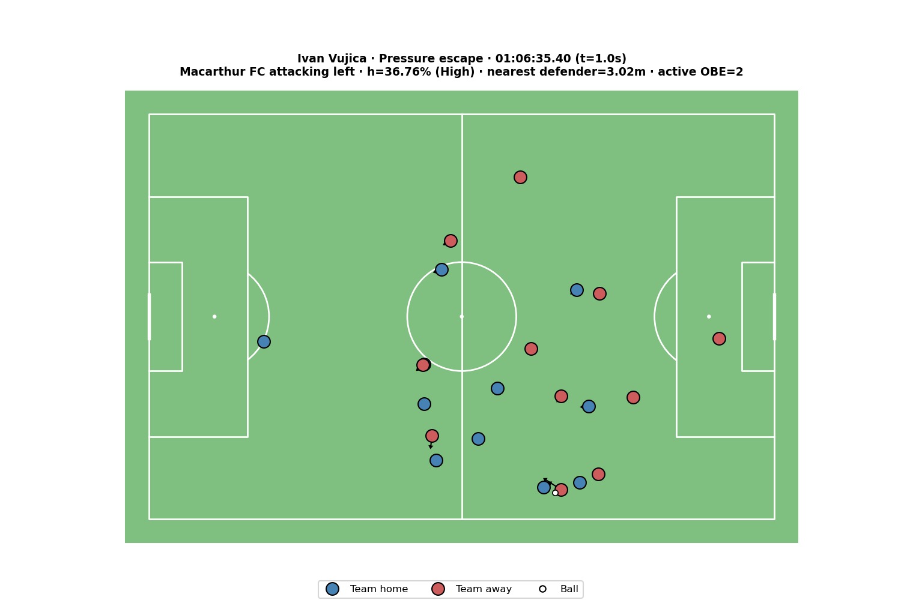
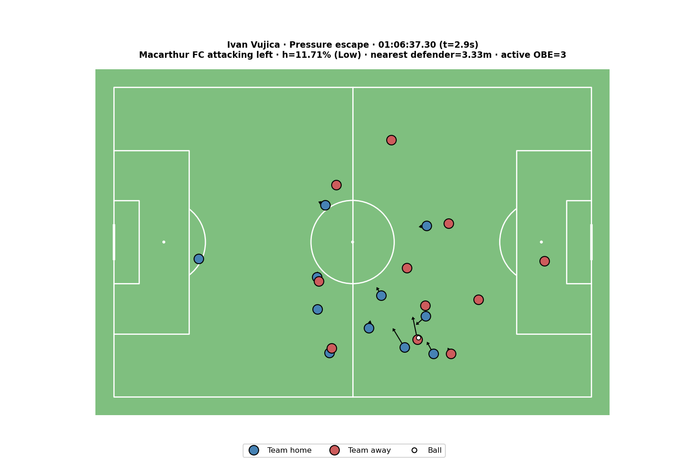
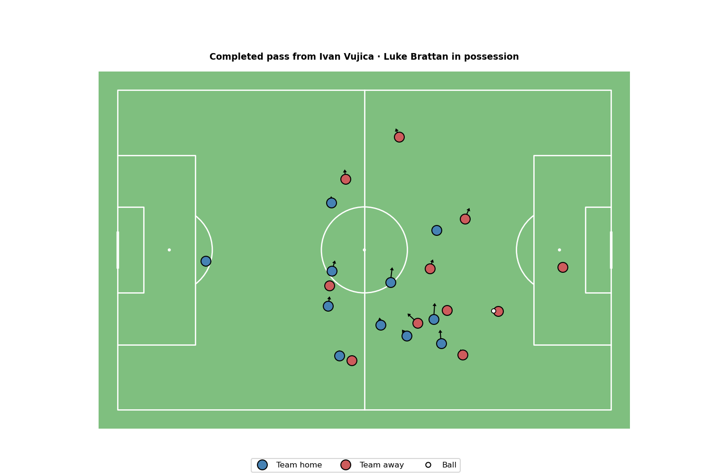
Case B: drawing pressure in the attacking third
Jonny Yull, Sydney FC–Adelaide United, 2025-02-01, 24:05.5–24:09.5. Yull receives in the opposing third and drives towards the penalty area, advancing 3.81 m. His run draws defenders, who converge on him and leave Dylan Pierias with space on the other side of the attack. Yull releases the pass to Pierias, who receives it. \(h\) rises 9.91% → 11.28% → 28.36% → 23.26% → 30.74%, from Low to High as the defenders close in. The sequence illustrates the drawing-pressure pattern (Passarotti 2026a). The last panel shows Pierias controlling the pass.
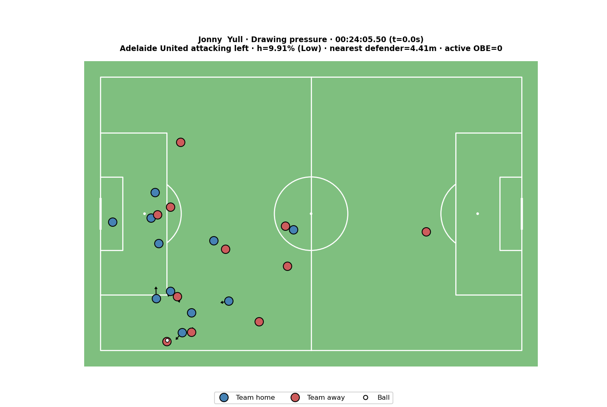
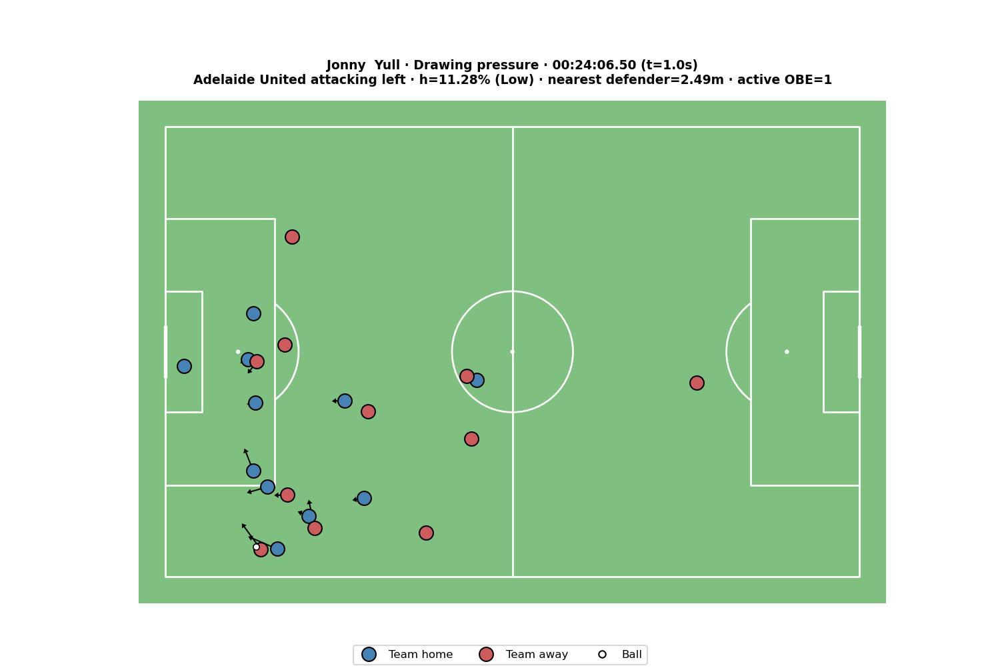
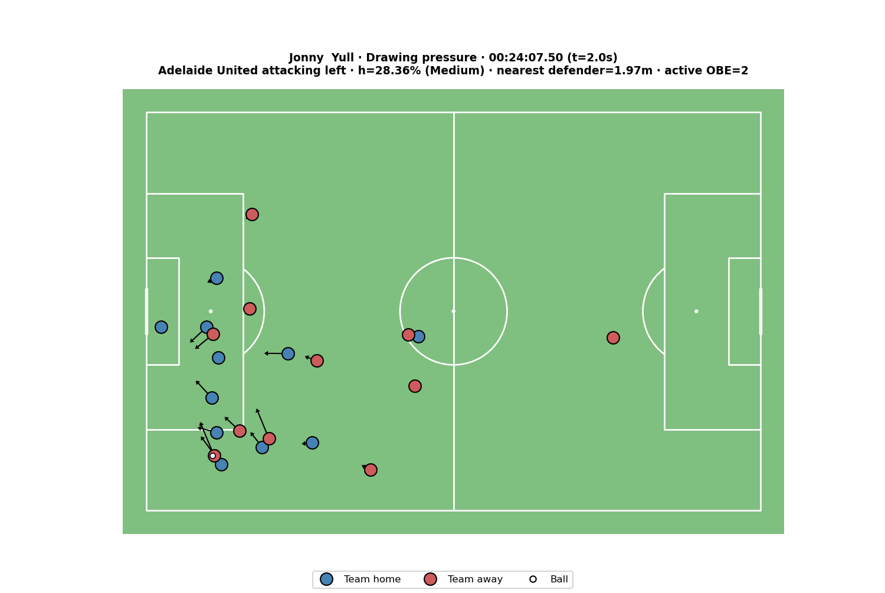
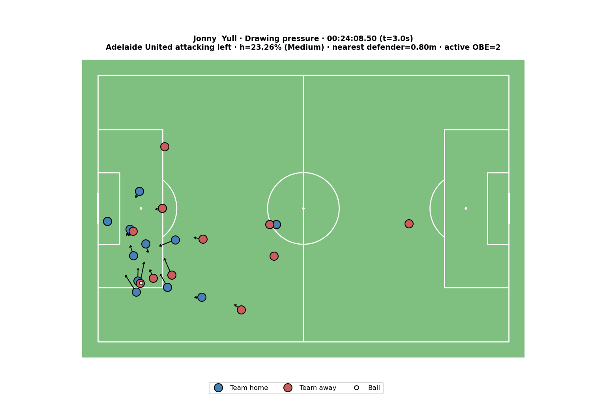
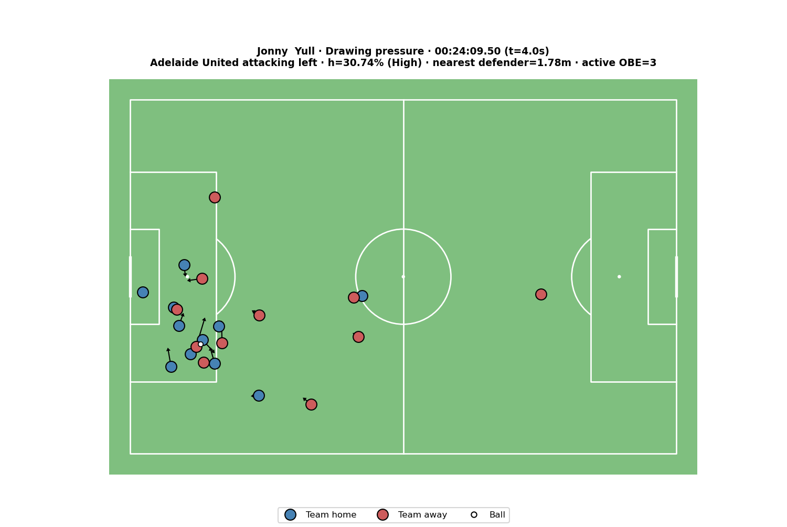
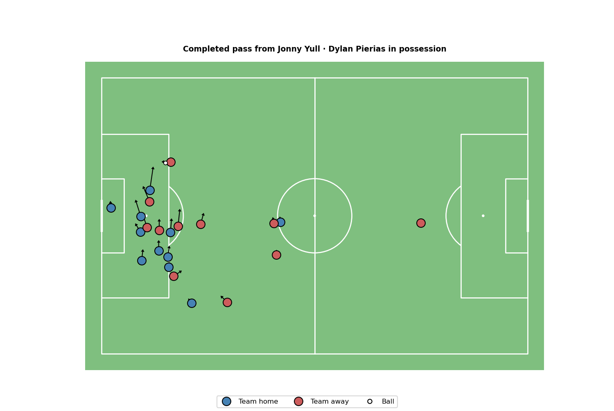
Case C: successful carrying under sustained pressure
Wataru Kamijo, Western United–Sydney FC, 2025-04-27, 51:01.2–51:03.5. After intercepting a pass, Kamijo carries the ball under pressure with few passing lines, advancing 8.63 m in the attacking direction over two full one-second carries. He then completes a pass to Douglas Costa de Souza without losing the ball. \(h\) is 35.62% → 29.47% → 38.23%, High at all three shown states. The sequence illustrates sustained successful carrying (Passarotti 2026c).
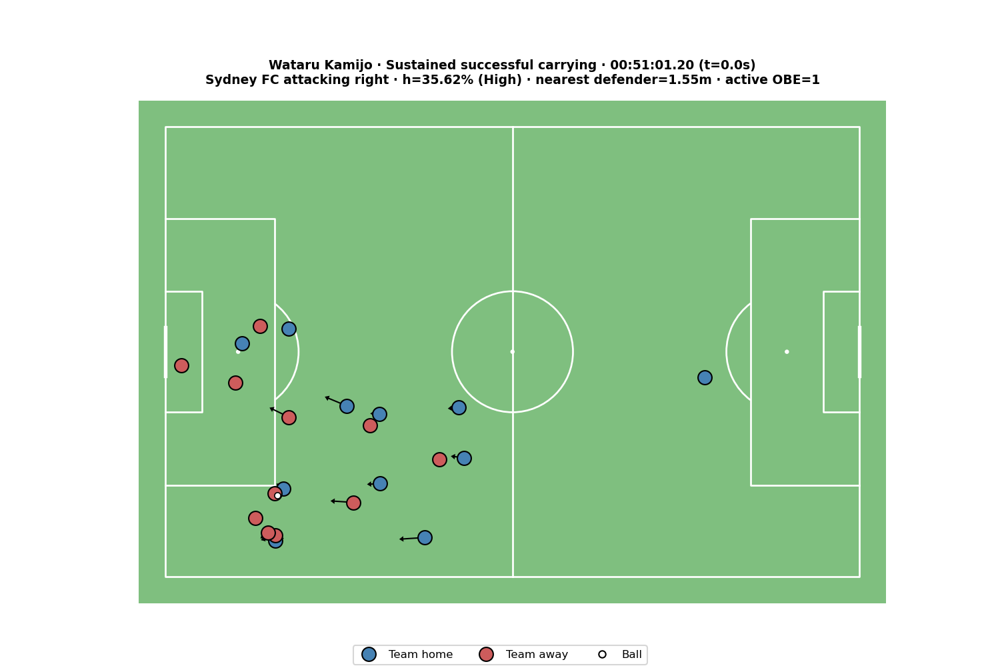
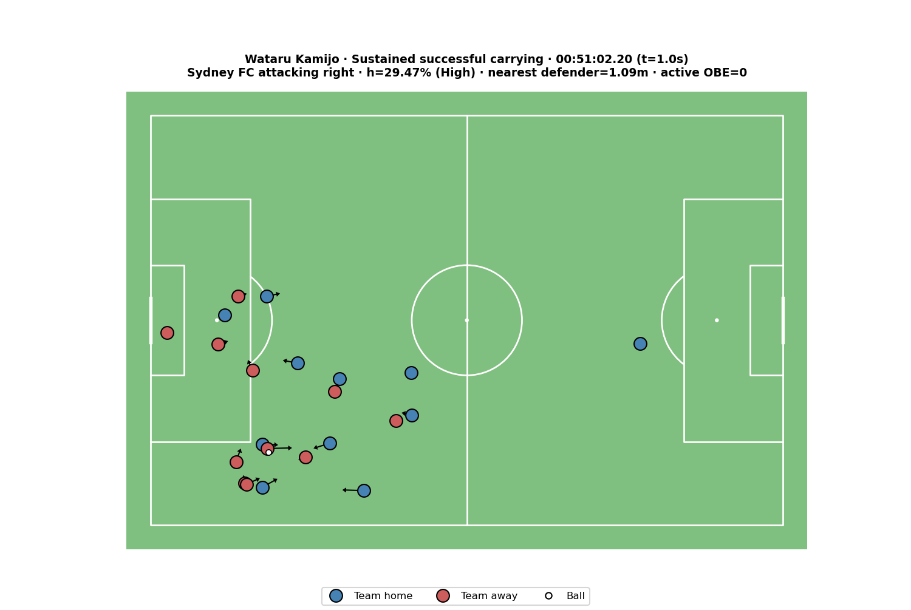
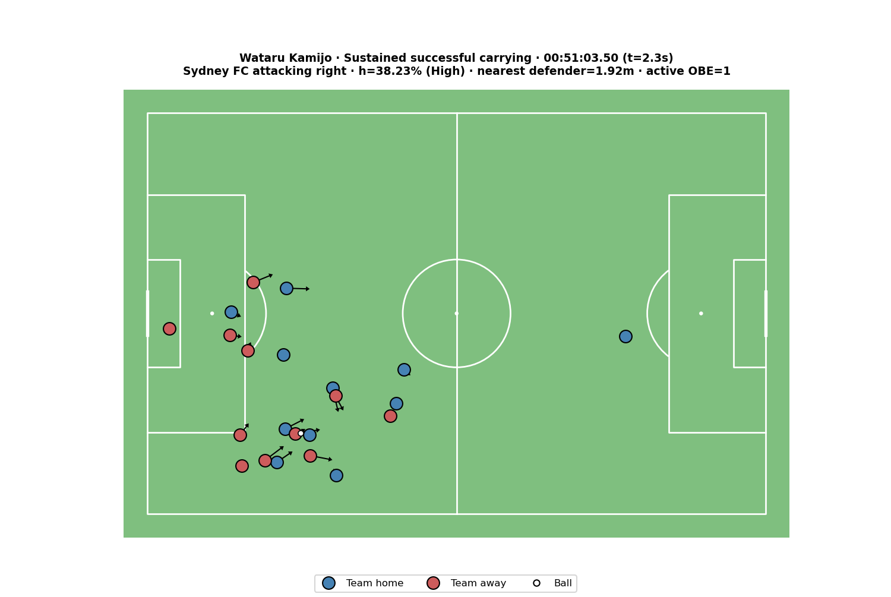
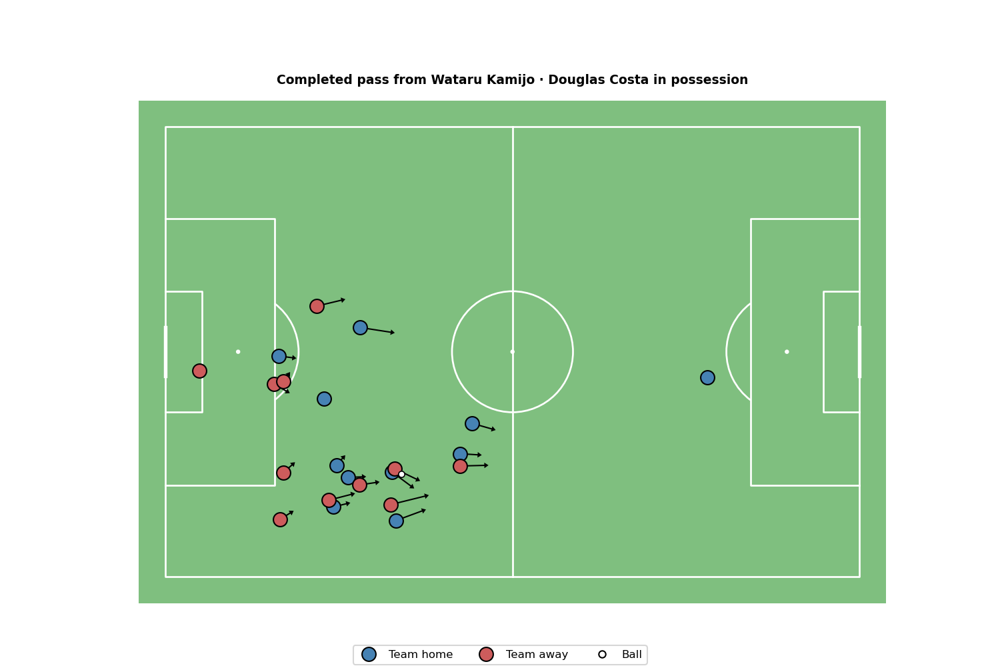
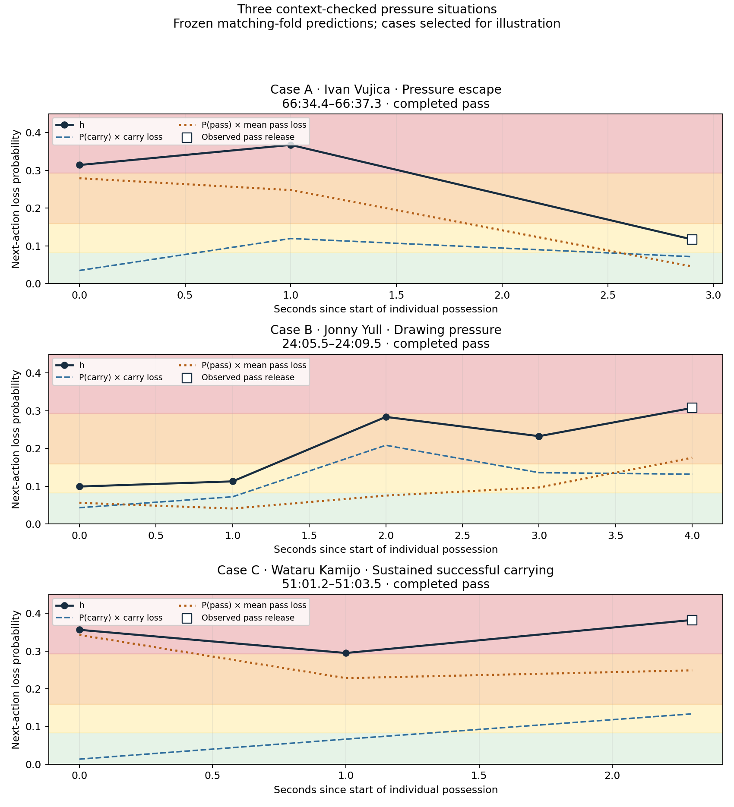
The figure summarizes the three cases through the weighted branch contributions to \(h\) along their checkpoints. The underlying values are available as case probabilities, event/outcome summaries, checkpoint geometry and engagement counts and context verification.
Patterns found
Each pattern has a starting situation without which it cannot occur: an escape needs initial pressure to escape from, drawing pressure needs a low-pressure reception, and sustained carrying needs carries made under pressure. The eligible possessions of a pattern are those that meet this starting situation. Among them, the pattern occurs when the remaining conditions of its definition also hold. The remaining possessions cannot show the pattern by construction.
Two shares describe each pattern, with the same count of possessions \(x\) in the numerator. The first divides by all 7,265 terminal-covered possessions, including single-checkpoint micropossessions, and gives the frequency of the pattern in the whole sample. The second divides by the eligible possessions and gives how often the starting situation develops into the pattern.
| Pattern | Possessions | Share of all 7,265 (95% Wilson interval) | Eligible possessions | Share among eligible (95% Wilson interval) |
|---|---|---|---|---|
| Pressure escape | 239 | 3.29% [2.90%, 3.73%] | 1,829 | 13.07% [11.60%, 14.69%] |
| Drawing pressure | 56 | 0.77% [0.59%, 1.00%] | 4,557 | 1.23% [0.95%, 1.59%] |
| Sustained successful carrying | 257 | 3.54% [3.14%, 3.99%] | 1,076 | 23.88% [21.43%, 26.52%] |
The eligible possessions of each pattern are:
- Pressure escape: possessions with an elevated initial state (\(h\ge0.159104\)). Possessions starting below Medium have no pressure to escape from and fall outside the eligible set. Within it, a possession that ends in a loss, or lasts less than 1 s, does not count as an escape and remains in the denominator.
- Drawing pressure: receptions with an initial state below Medium. Possessions that start with an elevated state, or with a start type other than a reception (ordinary pass, free-kick, goal-kick, corner or throw-in), fall outside the eligible set. Within it, receptions lasting less than 2 s, or not reaching High at the final state, do not count as occurrences and remain in the denominator.
- Sustained successful carrying: possessions with at least one canonical carry attempted in an elevated state, including failed carries shorter than 1 s. Possessions without carries, or whose carries all start below Medium, fall outside the eligible set. Within it, possessions with fewer than two successful full one-second carries starting in an elevated state do not count as occurrences and remain in the denominator.
The sample covers ten matches, so some patterns have few occurrences and some eligible sets are small. The table therefore reports 95% Wilson intervals on each share, with \(n\) equal to 7,265 for the first and to the number of eligible possessions for the second. The Wilson interval remains inside \([0,1]\) and keeps a sensible width for small counts and for shares close to zero, which is the situation of the rarest patterns.
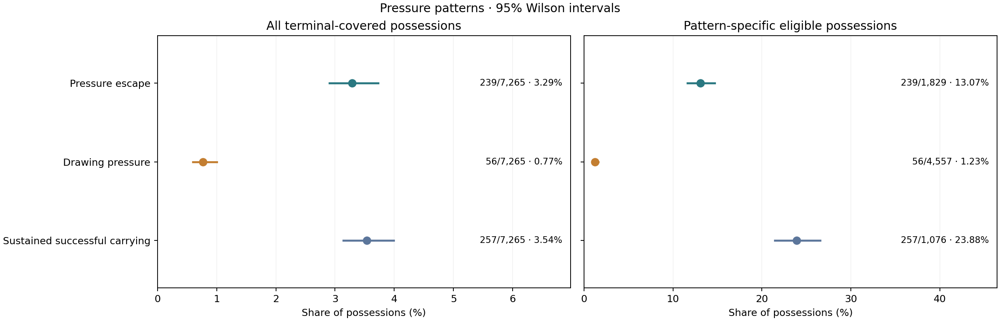
The patterns are also meant to profile a player by the types of possession to which they are exposed: how often they start under pressure and escape it, receive in space and draw opponents towards the ball, or keep the ball while carrying under sustained pressure. Such a profile needs enough possessions per player. The ten matches contain 239 pressure escapes, 56 drawing-pressure possessions and 257 sustained carrying possessions, spread over 192 players and 12 teams. This leaves on average about 1.2, 0.3 and 1.3 occurrences per player and about 20, 5 and 21 per team, too few for a breakdown by pattern. The typology is therefore reported at league level and describes the sample as a whole.
3. Player and team report
The report describes how teams and players fare in the situations where \(h\) signals a high risk of losing the ball. It uses held-out \(h\) from the matching fold for 14,919 canonical states from 7,265 individual possessions, 192 players and 12 teams in the ten matches. Teams appear in one to four matches, and the results describe this sample.
Attribution
\(h\) measures the fragility of the team possession at a checkpoint. For player attribution, each canonical action is assigned to its current carrier, and a completed pass ends that individual’s involvement without ending the team sequence. The team report aggregates the actions of all the players of the team.
Elevated-risk actions
The report focuses on the canonical actions with \(h_i\ge0.159104\), those in Medium or High. They are the situations in which a loss is a real possibility. At lower \(h\) failures are rare, and differences between teams or players would rest on a handful of events. For an entity \(j\), a player or a team, \(A_j\) is the set of its elevated-risk actions, and \(y_i=1\) if the current action \(i\) fails (a failed pass or a lost carry) and \(y_i=0\) otherwise.
Expected minus observed: E−O per 100 actions
The prediction \(h_i\) is the probability that action \(i\) fails. Its mean over \(A_j\), \(\bar h_j\), is the failure frequency expected for the entity in its elevated-risk actions, and \(\bar y_j\) is the frequency observed. The score is
\[\mathrm{E{-}O}_j=100\,\frac{\sum_{i\in A_j}(h_i-y_i)}{|A_j|}=100\,(\bar h_j-\bar y_j).\]
A positive value means fewer failures than predicted and a negative value more failures. Over all 3,324 elevated-risk actions of the sample the mean \(h\) is about 25.2% and the observed failure frequency about 24.4%, so the score of the whole league is close to zero (about +0.8). Zero is therefore the natural reference for reading the scores of teams and players. The score summarizes resistance to pressure through the risk of losing the ball. Assessing the value of the actions would combine \(h\) with a measure of expected possession value, such as the expected threat model of the expected threat vignette.
Quantities in the tables
- Matches: the matches in which the entity appears.
- Elevated actions: \(|A_j|\), the denominator of the score.
- Exposed possessions: the distinct possessions containing at least one elevated-risk action of the entity. Summed over the twelve teams they give the 2,505 possessions reaching Medium or High.
- Mean \(h\): \(\bar h_j\), the expected failure frequency.
- Observed failures: \(\bar y_j\), the observed failure frequency.
- High share: the share of elevated-risk actions with \(h\ge0.292893\) (High band), which shows how much of the exposure sits in the highest band.
- E−O per 100: the score, equal to 100 times Mean \(h\) minus Observed failures, with its interval.
If \(A_j\) is empty, the score and these rates are undefined, and the complete table retains those players with their counts.
Uncertainty of the score
E−O is computed on a limited number of elevated-risk actions, so each score comes with a 95% interval from a bootstrap that resamples possessions (Efron and Tibshirani 1993). The bootstrap draws units that are assumed independent and keeps each drawn unit intact.
Resampling unit
Actions of the same possession share the carrier, the context and the pressure state, so they depend strongly on each other and are resampled together. The match would be a larger unit, but a team is represented in one to four matches, and a team observed in a single match offers one unit: resampling it returns the observed score at every replicate and the interval reduces to a point. The individual possession is the largest unit for which every team and every player with elevated-risk actions has several units. It is therefore the primary procedure. The match-bootstrap sensitivity is kept separately.
Quantities
For an entity \(j\), a player or a team, the blocks \(b=1,\dots,K\) are the distinct possessions that contain at least one action of \(A_j\). Each block carries three numbers computed once over its actions in \(A_j\):
- \(n_b\), the number of actions;
- \(H_b=\sum h_i\), the sum of the predicted failure probabilities;
- \(Y_b=\sum y_i\), the number of observed failures.
Summing over blocks, the score is \[\mathrm{E{-}O}_j=100\,\frac{\sum_{b}(H_b-Y_b)}{\sum_b n_b}.\]
Procedure
- Draw \(K\) blocks with replacement from the \(K\) blocks of \(j\). Some blocks are drawn several times and others not at all.
- Add up \(n_b\), \(H_b\) and \(Y_b\) over the drawn blocks, counting a repeated block each time it is drawn, and compute the score \(\mathrm{E{-}O}^*\) with the number of actions of the drawn sample as denominator.
- Repeat 2,000 times with seed 20261030, obtaining 2,000 values of \(\mathrm{E{-}O}^*\).
- The interval is formed by the 2.5th and 97.5th percentiles of these values.
The predictions \(h_i\) and the membership in \(A_j\) stay fixed: the replicates change which possessions enter the sample and how many times. Each entity has its own deterministic random stream derived from the seed, so the result is independent of the order of the table.
Reporting
Players with at least 20 distinct exposed possessions show the interval. Below that count the table shows the score and its support.
The intervals describe the sampling variability of the possessions of these ten matches. They treat possessions of the same match or team as independent and are conditional on the fitted models.
Team scores
The team E−O score is computed on elevated-risk actions, which can include several actions per possession. The figure and the table give the score with its possession-bootstrap interval and the action support.
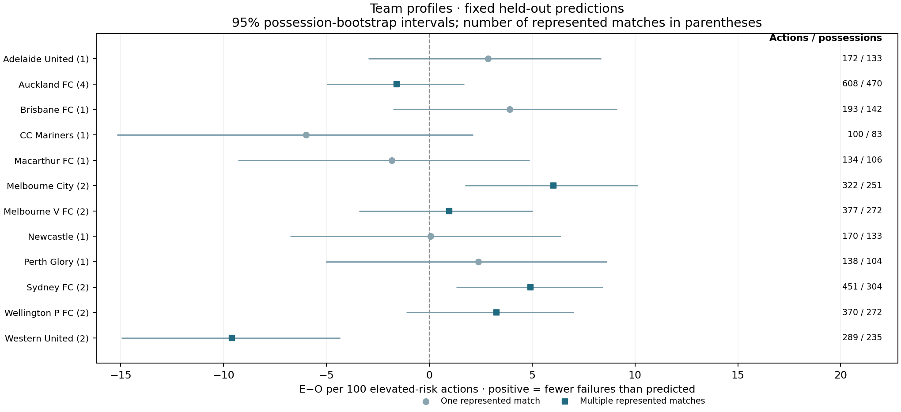
| Team | Matches | Elevated actions | Exposed possessions | Mean \(h\) | Observed failures | High share | E−O per 100 (95% interval) |
|---|---|---|---|---|---|---|---|
| Adelaide United | 1 | 172 | 133 | 24.36% | 21.51% | 19.77% | 2.85 [-2.96, 8.36] |
| Auckland FC | 4 | 608 | 470 | 24.73% | 26.32% | 22.53% | -1.59 [-4.98, 1.70] |
| Brisbane FC | 1 | 193 | 142 | 23.61% | 19.69% | 16.58% | 3.92 [-1.77, 9.14] |
| CC Mariners | 1 | 100 | 83 | 25.01% | 31.00% | 30.00% | -5.99 [-15.17, 2.12] |
| Macarthur FC | 1 | 134 | 106 | 24.30% | 26.12% | 23.13% | -1.82 [-9.29, 4.88] |
| Melbourne City | 2 | 322 | 251 | 24.36% | 18.32% | 21.43% | 6.04 [1.74, 10.13] |
| Melbourne V FC | 2 | 377 | 272 | 25.64% | 24.67% | 26.79% | 0.97 [-3.41, 5.03] |
| Newcastle | 1 | 170 | 133 | 27.12% | 27.06% | 30.59% | 0.06 [-6.76, 6.41] |
| Perth Glory | 1 | 138 | 104 | 24.84% | 22.46% | 25.36% | 2.38 [-5.02, 8.63] |
| Sydney FC | 2 | 451 | 304 | 25.11% | 20.18% | 25.50% | 4.93 [1.32, 8.45] |
| Wellington P FC | 2 | 370 | 272 | 26.52% | 23.24% | 30.81% | 3.27 [-1.12, 7.02] |
| Western United | 2 | 289 | 235 | 26.39% | 35.99% | 31.49% | -9.60 [-14.97, -4.34] |
The sample comes from the 2024/25 A-League Men season, in which Auckland FC, a new club, won the Premiers Plate and Melbourne City won the championship, with Western United third in the regular season (Wikipedia). The scores below describe how each team handled elevated-risk situations in its sampled matches. With one or two matches for most teams, the score of each team reflects the sampled matches and depends on the opponent and on how those games developed.
Three of the twelve intervals exclude zero: Melbourne City (+6.04) and Sydney FC (+4.93) above it, and Western United (−9.60) below it. Melbourne City and Sydney FC fail less often than predicted, with observed failure frequencies of 18.32% and 20.18% against mean \(h\) of 24.36% and 25.11%. Western United combines the highest High share of the league (31.49%) with an observed failure frequency (35.99%) well above its mean \(h\) (26.39%), so its elevated-risk actions concentrate in the highest band and fail more often than predicted. The other nine intervals include zero.
Exposure and score are not linked in a simple way. Wellington P FC and Newcastle have High shares close to that of Western United (30.81% and 30.59%) and scores near or above zero (+3.27 and +0.06), so teams with a high High share have scores of both signs.
The width of the intervals follows the support. A team observed in one match, such as CC Mariners with 100 elevated-risk actions, has a wide interval (−15.17 to +2.12), while Auckland FC, observed in four matches with 608 actions, has a narrow one (−4.98 to +1.70). With one to four matches per team, the intervals that exclude zero are descriptions of the sampled matches, and the nine that include zero show differences too small to separate from possession-to-possession variation.
Complement: possessions by maximum band
A complementary descriptive statistic classifies each possession by the maximum band reached across its checkpoints. Possessions with more checkpoints have more chances to reach Medium or High, so the statistic also reflects their duration. The exposure of a team is the share of its possessions reaching Medium or High, and its retention is the share of those that end with a completed pass. Across the sample, 2,505 of 7,265 possessions (34.48%) reach Medium or High, and 1,599 of those (63.83%) end with a completed pass. Both proportions have 95% Wilson intervals over possessions.
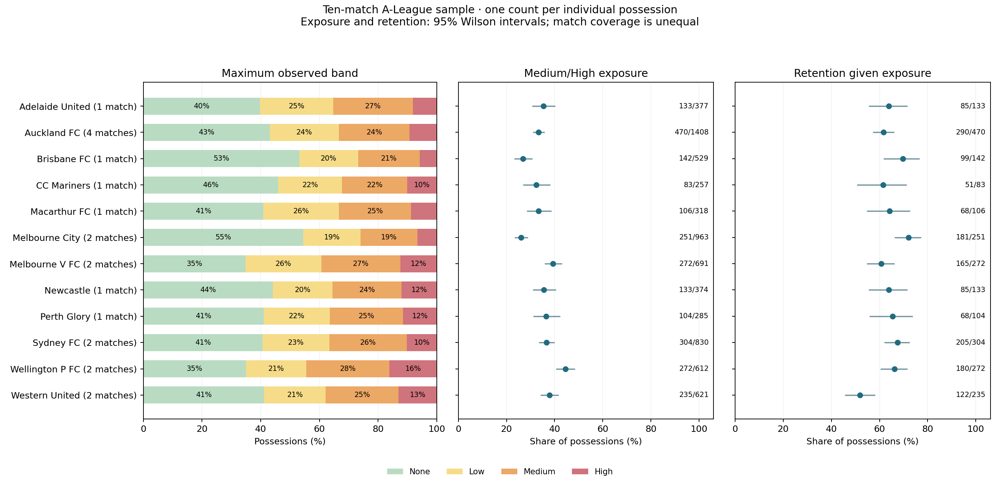
At league level, about one possession in three reaches Medium or High, and about two thirds of those end with a completed pass. Among the possessions that start in an elevated state, 13.07% end as a pressure escape, and among those with a carry attempted in an elevated state, 23.88% contain sustained successful carrying. Drawing pressure is the rarest pattern, at 1.23% of the receptions that start below Medium. These frequencies describe the ten sampled matches. A reference from other leagues would be needed to call them high or low, so they remain a description of these matches.
Player scores
The plot includes the 40 players with at least 20 distinct exposed possessions, the minimum for which the bootstrap interval is shown. Each player has a point with its interval. Marker shape distinguishes one represented match from several, and the counts beside the points show elevated-risk actions and exposed possessions. Players are grouped by team and name for display. The tables report the same quantities as for the teams.
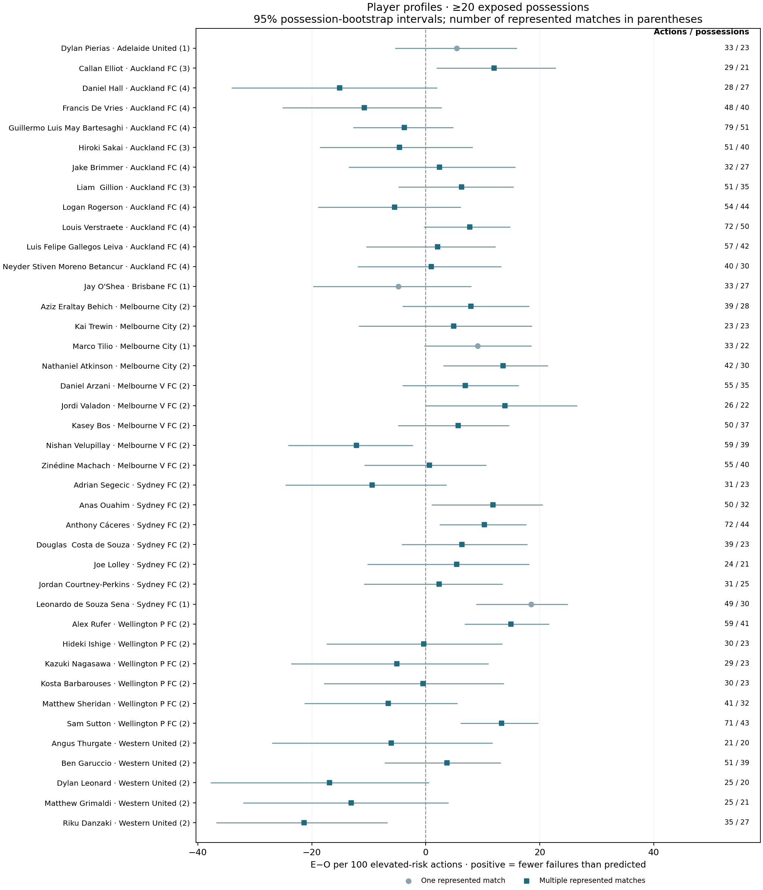
Of the 192 players, 189 have at least one elevated-risk action and 40 have an interval. Nine of these 40 have an interval that excludes zero, with between 29 and 72 elevated-risk actions each: seven above zero (Leonardo de Souza Sena +18.51, Alex Rufer +14.92, Nathaniel Atkinson +13.53, Sam Sutton +13.29, Callan Elliot +11.96, Anas Ouahim +11.79 and Anthony Cáceres +10.28) and two below (Nishan Velupillay −12.16 and Riku Danzaki −21.35). If the true score of all 40 players were zero, about two intervals at 95% would exclude it by chance, so nine exceeds what chance alone produces. With 40 intervals and supports of this size, the list describes the sample.
The players agree with their teams. Three of the seven players above zero play for Sydney FC (team score +4.93) and two for Wellington P FC (+3.27), Atkinson plays for Melbourne City (+6.04), and Danzaki, below zero, plays for Western United (−9.60). Player and team scores are computed on the same actions, so this agreement is expected. Velupillay (Melbourne V FC, team +0.97) and Elliot (Auckland FC, team −1.59) have scores that differ from their team’s.
The pressure patterns could also profile each player by the types of possession in which they take part. As explained in the patterns section above, ten matches give too few occurrences per player, so the player report is limited to E−O. With more matches the same classification applies to each player.
The table shows four players of the 2024/25 PFA A-League Men Team of the Season to illustrate the report format. The complete table for all 192 players follows.
| Player | Team | Matches | Elevated actions | Exposed possessions | Mean \(h\) | Observed failures | High share | E−O per 100 (95% interval) |
|---|---|---|---|---|---|---|---|---|
| Louis Verstraete | Auckland FC | 4 | 72 | 50 | 24.35% | 16.67% | 20.83% | 7.69 [-0.35, 14.80] |
| Anthony Cáceres | Sydney FC | 2 | 72 | 44 | 25.55% | 15.28% | 25.00% | 10.28 [2.43, 17.65] |
| Nathaniel Atkinson | Melbourne City | 2 | 42 | 30 | 25.44% | 11.90% | 23.81% | 13.53 [3.03, 21.44] |
| Francis De Vries | Auckland FC | 4 | 48 | 40 | 24.60% | 35.42% | 29.17% | -10.81 [-25.15, 2.82] |
The four players are in the 2024/25 PFA team of the season, voted by the players of the league: Louis Verstraete, Nathaniel Atkinson and Francis De Vries in the starting XI, and Anthony Cáceres among the substitutes (Professional Footballers Australia 2025). In the sampled matches, the intervals of Cáceres and Atkinson are above zero. Verstraete has a positive score whose interval lies almost entirely above zero (lower end −0.35), and De Vries has a negative score whose interval includes zero. The scores describe how each player handled elevated-risk actions in these matches, with between 42 and 72 such actions per player.
The roles of the four players give context to these actions. Verstraete is the midfielder who plays in front of the back four of Auckland and links defence and attack NZ Herald. De Vries is Auckland’s left-back. Atkinson is described as an attacking full-back who likes to carry the ball forward Socceroos, and Cáceres is a Sydney FC midfielder with more than 150 A-League appearances Sydney FC. Auckland’s account (Auckland FC 2025) and Sydney’s description of Cáceres’ international debut (Sydney FC 2024) give qualitative context on their on-ball play.
The CIES league report presents pressure exposure and retention by playing position and discusses their dependence on playing context, over a much larger sample and with different players, pressure metric and coverage (Poli, Ravenel, and Besson 2024). A minimum-arrival-time study relates pressure at possession endpoints to progression and loss using another pressure definition (Narizuka et al. 2026). These sources inform what the report presents.
Complete table: all 192 players
| Player | Team | Matches | Elevated actions | Exposed possessions | Mean h | Observed failures | High share | E−O per 100 (95% interval) |
|---|---|---|---|---|---|---|---|---|
| Archie Goodwin | Adelaide United | 1 | 2 | 2 | 17.77% | 50.00% | 0.00% | -32.23 [not reported] |
| Austin Ayoubi | Adelaide United | 1 | 5 | 2 | 17.99% | 20.00% | 0.00% | -2.01 [not reported] |
| Bart Vriends | Adelaide United | 1 | 7 | 6 | 25.02% | 42.86% | 14.29% | -17.83 [not reported] |
| Dylan Pierias | Adelaide United | 1 | 33 | 23 | 26.64% | 21.21% | 24.24% | 5.43 [-5.41, 15.96] |
| Ethan Alagich | Adelaide United | 1 | 19 | 16 | 22.47% | 21.05% | 10.53% | 1.42 [not reported] |
| Fabian Talladira | Adelaide United | 1 | 10 | 10 | 23.79% | 30.00% | 20.00% | -6.21 [not reported] |
| Isaías Sánchez Cortés | Adelaide United | 1 | 9 | 8 | 21.64% | 11.11% | 11.11% | 10.53 [not reported] |
| Jay Barnett | Adelaide United | 1 | 6 | 6 | 23.52% | 16.67% | 0.00% | 6.85 [not reported] |
| Jonny Yull | Adelaide United | 1 | 16 | 11 | 23.63% | 12.50% | 12.50% | 11.13 [not reported] |
| Luka Jovanovic | Adelaide United | 1 | 7 | 4 | 26.78% | 28.57% | 28.57% | -1.79 [not reported] |
| Panagiotis Kikianis | Adelaide United | 1 | 17 | 14 | 26.79% | 29.41% | 52.94% | -2.62 [not reported] |
| Ryan White | Adelaide United | 1 | 2 | 2 | 30.69% | 0.00% | 50.00% | 30.69 [not reported] |
| Stefan Mauk | Adelaide United | 1 | 15 | 13 | 22.17% | 20.00% | 6.67% | 2.17 [not reported] |
| Yaya Dukuly | Adelaide United | 1 | 13 | 7 | 24.25% | 23.08% | 15.38% | 1.18 [not reported] |
| Zach Clough | Adelaide United | 1 | 11 | 9 | 25.40% | 9.09% | 27.27% | 16.31 [not reported] |
| Callan Elliot | Auckland FC | 3 | 29 | 21 | 25.75% | 13.79% | 20.69% | 11.96 [1.89, 22.82] |
| Cameron Drew Howieson | Auckland FC | 1 | 7 | 6 | 23.81% | 0.00% | 14.29% | 23.81 [not reported] |
| Daniel Hall | Auckland FC | 4 | 28 | 27 | 24.14% | 39.29% | 14.29% | -15.14 [-34.10, 1.98] |
| Francis De Vries | Auckland FC | 4 | 48 | 40 | 24.60% | 35.42% | 29.17% | -10.81 [-25.15, 2.82] |
| Guillermo Luis May Bartesaghi | Auckland FC | 4 | 79 | 51 | 24.05% | 27.85% | 18.99% | -3.79 [-12.73, 4.81] |
| Hiroki Sakai | Auckland FC | 3 | 51 | 40 | 24.79% | 29.41% | 23.53% | -4.62 [-18.59, 8.24] |
| Jake Brimmer | Auckland FC | 4 | 32 | 27 | 24.27% | 21.88% | 9.38% | 2.39 [-13.51, 15.71] |
| Jesse Randall | Auckland FC | 2 | 5 | 5 | 21.06% | 20.00% | 20.00% | 1.06 [not reported] |
| Liam Gillion | Auckland FC | 3 | 51 | 35 | 23.90% | 17.65% | 19.61% | 6.26 [-4.81, 15.40] |
| Logan Rogerson | Auckland FC | 4 | 54 | 44 | 26.04% | 31.48% | 33.33% | -5.44 [-18.93, 6.15] |
| Louis Verstraete | Auckland FC | 4 | 72 | 50 | 24.35% | 16.67% | 20.83% | 7.69 [-0.35, 14.80] |
| Luis Felipe Gallegos Leiva | Auckland FC | 4 | 57 | 42 | 24.86% | 22.81% | 22.81% | 2.05 [-10.43, 12.24] |
| Luis Toomey | Auckland FC | 1 | 7 | 6 | 25.18% | 0.00% | 14.29% | 25.18 [not reported] |
| Marlee Francois | Auckland FC | 2 | 16 | 15 | 24.61% | 43.75% | 18.75% | -19.14 [not reported] |
| Max Mata | Auckland FC | 2 | 14 | 13 | 25.67% | 57.14% | 14.29% | -31.47 [not reported] |
| Nando Pijnaker | Auckland FC | 4 | 14 | 14 | 24.84% | 35.71% | 28.57% | -10.88 [not reported] |
| Neyder Stiven Moreno Betancur | Auckland FC | 4 | 40 | 30 | 25.98% | 25.00% | 32.50% | 0.98 [-11.96, 13.22] |
| Tommy Smith | Auckland FC | 3 | 4 | 4 | 26.63% | 50.00% | 50.00% | -23.37 [not reported] |
| Adam Zimarino | Brisbane FC | 1 | 18 | 10 | 24.45% | 5.56% | 22.22% | 18.90 [not reported] |
| Antonee Alan Burke-Gilroy | Brisbane FC | 1 | 15 | 12 | 22.70% | 0.00% | 13.33% | 22.70 [not reported] |
| Ben Warland | Brisbane FC | 1 | 0 | 0 | — | — | — | undefined |
| Florin Bérenguer | Brisbane FC | 1 | 15 | 11 | 22.03% | 13.33% | 6.67% | 8.70 [not reported] |
| Harry Van Der Saag | Brisbane FC | 1 | 9 | 8 | 24.89% | 55.56% | 33.33% | -30.67 [not reported] |
| Hosine Bility | Brisbane FC | 1 | 6 | 6 | 24.54% | 33.33% | 16.67% | -8.79 [not reported] |
| Jack Hingert | Brisbane FC | 1 | 20 | 12 | 26.40% | 20.00% | 25.00% | 6.40 [not reported] |
| Jacob Brazete | Brisbane FC | 1 | 13 | 10 | 25.08% | 30.77% | 30.77% | -5.68 [not reported] |
| Jay O’Shea | Brisbane FC | 1 | 33 | 27 | 22.44% | 27.27% | 9.09% | -4.83 [-19.79, 8.01] |
| Keegan Jelacic | Brisbane FC | 1 | 28 | 18 | 23.91% | 14.29% | 14.29% | 9.63 [not reported] |
| Lucas Herrington | Brisbane FC | 1 | 7 | 6 | 24.15% | 28.57% | 14.29% | -4.42 [not reported] |
| Neicer Aldhair Acosta Mendez | Brisbane FC | 1 | 5 | 4 | 21.27% | 0.00% | 20.00% | 21.27 [not reported] |
| Quinn MacNicol | Brisbane FC | 1 | 3 | 2 | 17.75% | 33.33% | 0.00% | -15.59 [not reported] |
| Thomas Waddingham | Brisbane FC | 1 | 8 | 4 | 25.07% | 25.00% | 25.00% | 0.07 [not reported] |
| Walid Shour | Brisbane FC | 1 | 13 | 12 | 21.54% | 15.38% | 7.69% | 6.15 [not reported] |
| Alfie McCalmont | CC Mariners | 1 | 5 | 5 | 26.37% | 0.00% | 60.00% | 26.37 [not reported] |
| Alou Kuol | CC Mariners | 1 | 6 | 3 | 25.07% | 0.00% | 50.00% | 25.07 [not reported] |
| Antonio Mikael Rodrigues Brito | CC Mariners | 1 | 6 | 4 | 28.01% | 16.67% | 33.33% | 11.34 [not reported] |
| Bailey Brandtman | CC Mariners | 1 | 8 | 6 | 28.81% | 12.50% | 50.00% | 16.31 [not reported] |
| Brian Kaltak | CC Mariners | 1 | 7 | 6 | 22.02% | 42.86% | 14.29% | -20.84 [not reported] |
| Christian Theoharous | CC Mariners | 1 | 4 | 4 | 22.38% | 50.00% | 0.00% | -27.62 [not reported] |
| Diesel Herrington | CC Mariners | 1 | 2 | 2 | 33.59% | 50.00% | 50.00% | -16.41 [not reported] |
| Haine Anthony Eames | CC Mariners | 1 | 0 | 0 | — | — | — | undefined |
| Harrison Steele | CC Mariners | 1 | 8 | 8 | 25.51% | 37.50% | 37.50% | -11.99 [not reported] |
| Nathan Paull | CC Mariners | 1 | 14 | 11 | 26.37% | 28.57% | 35.71% | -2.20 [not reported] |
| Noah Smith | CC Mariners | 1 | 10 | 8 | 24.74% | 50.00% | 30.00% | -25.26 [not reported] |
| Storm Roux | CC Mariners | 1 | 15 | 15 | 24.63% | 40.00% | 26.67% | -15.37 [not reported] |
| Trent Sainsbury | CC Mariners | 1 | 9 | 8 | 21.30% | 33.33% | 0.00% | -12.03 [not reported] |
| Will Wilson | CC Mariners | 1 | 6 | 3 | 21.17% | 33.33% | 16.67% | -12.16 [not reported] |
| Chris Ikonomidis | Macarthur FC | 1 | 3 | 2 | 25.21% | 66.67% | 33.33% | -41.46 [not reported] |
| Dean Bosnjak | Macarthur FC | 1 | 5 | 3 | 23.99% | 20.00% | 20.00% | 3.99 [not reported] |
| Harry Sawyer | Macarthur FC | 1 | 0 | 0 | — | — | — | undefined |
| Ivan Vujica | Macarthur FC | 1 | 21 | 16 | 24.23% | 9.52% | 28.57% | 14.71 [not reported] |
| Jake Hollman | Macarthur FC | 1 | 13 | 11 | 24.71% | 15.38% | 15.38% | 9.33 [not reported] |
| Kealey Adamson | Macarthur FC | 1 | 22 | 17 | 27.76% | 31.82% | 36.36% | -4.06 [not reported] |
| Kévin Boli | Macarthur FC | 1 | 6 | 6 | 27.62% | 66.67% | 33.33% | -39.05 [not reported] |
| Liam Rose | Macarthur FC | 1 | 8 | 6 | 25.38% | 25.00% | 25.00% | 0.38 [not reported] |
| Luke Brattan | Macarthur FC | 1 | 10 | 10 | 21.65% | 30.00% | 20.00% | -8.35 [not reported] |
| Marin Jakoliš | Macarthur FC | 1 | 17 | 10 | 22.58% | 17.65% | 23.53% | 4.94 [not reported] |
| Matthew Jurman | Macarthur FC | 1 | 7 | 6 | 21.35% | 42.86% | 0.00% | -21.50 [not reported] |
| Peter Makrillos | Macarthur FC | 1 | 2 | 2 | 16.96% | 50.00% | 0.00% | -33.04 [not reported] |
| Saîf-Eddine Khaoui | Macarthur FC | 1 | 9 | 6 | 28.46% | 44.44% | 33.33% | -15.99 [not reported] |
| Tomislav Uskok | Macarthur FC | 1 | 10 | 10 | 18.42% | 10.00% | 0.00% | 8.42 [not reported] |
| Yianni Nicolaou | Macarthur FC | 1 | 1 | 1 | 27.57% | 0.00% | 0.00% | 27.57 [not reported] |
| Andreas Kuen | Melbourne City | 1 | 17 | 13 | 26.17% | 29.41% | 23.53% | -3.24 [not reported] |
| Aziz Eraltay Behich | Melbourne City | 2 | 39 | 28 | 23.29% | 15.38% | 20.51% | 7.91 [-4.12, 18.13] |
| Benjamin Mazzeo | Melbourne City | 1 | 9 | 8 | 26.70% | 33.33% | 33.33% | -6.63 [not reported] |
| Callum Talbot | Melbourne City | 1 | 15 | 14 | 24.11% | 20.00% | 20.00% | 4.11 [not reported] |
| Germán Julio César Ferreyra | Melbourne City | 2 | 14 | 11 | 20.55% | 7.14% | 7.14% | 13.41 [not reported] |
| Harry Politidis | Melbourne City | 2 | 11 | 9 | 24.08% | 27.27% | 18.18% | -3.19 [not reported] |
| Kai Trewin | Melbourne City | 2 | 23 | 23 | 22.32% | 17.39% | 8.70% | 4.93 [-11.76, 18.63] |
| Kavian Rahmani | Melbourne City | 2 | 26 | 15 | 25.68% | 11.54% | 23.08% | 14.14 [not reported] |
| Lawrence Wong | Melbourne City | 1 | 5 | 4 | 21.64% | 40.00% | 0.00% | -18.36 [not reported] |
| Marco Tilio | Melbourne City | 1 | 33 | 22 | 24.28% | 15.15% | 24.24% | 9.12 [-0.27, 18.51] |
| Mathew Leckie | Melbourne City | 1 | 21 | 17 | 21.84% | 23.81% | 9.52% | -1.97 [not reported] |
| Max Caputo | Melbourne City | 1 | 5 | 5 | 28.51% | 20.00% | 40.00% | 8.51 [not reported] |
| Medin Memeti | Melbourne City | 1 | 3 | 3 | 28.62% | 33.33% | 66.67% | -4.72 [not reported] |
| Michael Ghossaini | Melbourne City | 1 | 4 | 3 | 36.53% | 0.00% | 75.00% | 36.53 [not reported] |
| Michael Ghossaini | Melbourne City | 1 | 1 | 1 | 25.12% | 0.00% | 0.00% | 25.12 [not reported] |
| Nathaniel Atkinson | Melbourne City | 2 | 42 | 30 | 25.44% | 11.90% | 23.81% | 13.53 [3.03, 21.44] |
| Samuel Souprayen | Melbourne City | 2 | 19 | 15 | 25.30% | 15.79% | 26.32% | 9.51 [not reported] |
| Steven Ugarković | Melbourne City | 2 | 9 | 7 | 23.62% | 33.33% | 22.22% | -9.72 [not reported] |
| Yonatan Cohen | Melbourne City | 2 | 12 | 10 | 23.91% | 16.67% | 16.67% | 7.24 [not reported] |
| Zane William Schreiber | Melbourne City | 1 | 14 | 13 | 24.22% | 28.57% | 28.57% | -4.36 [not reported] |
| Alexander Badolato | Melbourne V FC | 2 | 10 | 8 | 24.22% | 20.00% | 10.00% | 4.22 [not reported] |
| Brendan Hamill | Melbourne V FC | 2 | 8 | 8 | 22.51% | 50.00% | 12.50% | -27.49 [not reported] |
| Bruno Fornaroli Mezza | Melbourne V FC | 2 | 14 | 6 | 27.54% | 35.71% | 35.71% | -8.18 [not reported] |
| Clarismario Santos Rodrigues | Melbourne V FC | 1 | 9 | 4 | 26.80% | 44.44% | 33.33% | -17.64 [not reported] |
| Daniel Arzani | Melbourne V FC | 2 | 55 | 35 | 26.92% | 20.00% | 32.73% | 6.92 [-4.07, 16.33] |
| Fabian Monge | Melbourne V FC | 1 | 3 | 3 | 19.91% | 33.33% | 0.00% | -13.42 [not reported] |
| Jordi Valadon | Melbourne V FC | 2 | 26 | 22 | 25.43% | 11.54% | 30.77% | 13.89 [-0.03, 26.55] |
| Joshua Inserra | Melbourne V FC | 1 | 16 | 14 | 25.65% | 12.50% | 25.00% | 13.15 [not reported] |
| Joshua Rawlins | Melbourne V FC | 2 | 20 | 18 | 27.42% | 25.00% | 35.00% | 2.42 [not reported] |
| Kasey Bos | Melbourne V FC | 2 | 50 | 37 | 23.69% | 18.00% | 20.00% | 5.69 [-4.91, 14.63] |
| Lachlan Jackson | Melbourne V FC | 2 | 9 | 8 | 24.30% | 33.33% | 22.22% | -9.04 [not reported] |
| Nikolaos Vergos | Melbourne V FC | 2 | 17 | 11 | 29.41% | 29.41% | 47.06% | 0.00 [not reported] |
| Nishan Velupillay | Melbourne V FC | 2 | 59 | 39 | 26.82% | 38.98% | 28.81% | -12.16 [-24.19, -2.24] |
| Reno Piscopo | Melbourne V FC | 2 | 4 | 3 | 23.47% | 0.00% | 25.00% | 23.47 [not reported] |
| Roderick Jefferson Gonçalves Miranda | Melbourne V FC | 1 | 10 | 7 | 26.04% | 10.00% | 20.00% | 16.04 [not reported] |
| Ryan Graham Pun Teague | Melbourne V FC | 2 | 12 | 9 | 23.70% | 16.67% | 25.00% | 7.03 [not reported] |
| Zinédine Machach | Melbourne V FC | 2 | 55 | 40 | 24.25% | 23.64% | 20.00% | 0.61 [-10.76, 10.63] |
| Aleksandar Šušnjar | Newcastle | 1 | 14 | 12 | 31.78% | 21.43% | 28.57% | 10.35 [not reported] |
| Benjamin Gibson | Newcastle | 1 | 7 | 6 | 27.49% | 14.29% | 42.86% | 13.20 [not reported] |
| Callum Timmins | Newcastle | 1 | 19 | 14 | 23.92% | 15.79% | 21.05% | 8.13 [not reported] |
| Clayton Taylor | Newcastle | 1 | 5 | 1 | 27.02% | 0.00% | 40.00% | 27.02 [not reported] |
| Dane Ingham | Newcastle | 1 | 22 | 17 | 28.33% | 45.45% | 40.91% | -17.12 [not reported] |
| Daniel Wilmering | Newcastle | 1 | 8 | 5 | 27.34% | 0.00% | 25.00% | 27.34 [not reported] |
| Eli Adams | Newcastle | 1 | 23 | 17 | 27.89% | 26.09% | 30.43% | 1.80 [not reported] |
| Justin Vidic | Newcastle | 1 | 3 | 1 | 36.95% | 33.33% | 100.00% | 3.62 [not reported] |
| Kosta Grozos | Newcastle | 1 | 17 | 14 | 27.81% | 35.29% | 23.53% | -7.49 [not reported] |
| Lachlan Bayliss | Newcastle | 1 | 7 | 6 | 27.54% | 42.86% | 42.86% | -15.31 [not reported] |
| Mark Natta | Newcastle | 1 | 16 | 14 | 22.53% | 31.25% | 18.75% | -8.72 [not reported] |
| Matthew Scarcella | Newcastle | 1 | 3 | 3 | 22.30% | 33.33% | 0.00% | -11.03 [not reported] |
| Phillip Cancar | Newcastle | 1 | 7 | 6 | 31.26% | 14.29% | 42.86% | 16.97 [not reported] |
| Thomas Aquilina | Newcastle | 1 | 19 | 17 | 25.14% | 31.58% | 26.32% | -6.44 [not reported] |
| Abdelelah Faisal | Perth Glory | 1 | 11 | 9 | 21.34% | 18.18% | 9.09% | 3.16 [not reported] |
| Adam Bugarija | Perth Glory | 1 | 6 | 6 | 25.85% | 33.33% | 33.33% | -7.48 [not reported] |
| Adriano Lebib | Perth Glory | 1 | 6 | 6 | 20.25% | 16.67% | 16.67% | 3.58 [not reported] |
| David Williams | Perth Glory | 1 | 12 | 11 | 26.92% | 25.00% | 50.00% | 1.92 [not reported] |
| Jarrod Carluccio | Perth Glory | 1 | 1 | 1 | 23.06% | 100.00% | 0.00% | -76.94 [not reported] |
| Josh Risdon | Perth Glory | 1 | 21 | 13 | 24.83% | 23.81% | 23.81% | 1.02 [not reported] |
| Khoa Ngo | Perth Glory | 1 | 4 | 3 | 26.28% | 50.00% | 25.00% | -23.72 [not reported] |
| Nathanael Blair | Perth Glory | 1 | 10 | 6 | 25.36% | 50.00% | 30.00% | -24.64 [not reported] |
| Nicholas Pennington | Perth Glory | 1 | 15 | 13 | 24.01% | 6.67% | 13.33% | 17.35 [not reported] |
| Riley Warland | Perth Glory | 1 | 17 | 11 | 21.69% | 11.76% | 5.88% | 9.93 [not reported] |
| Taras Gomulka | Perth Glory | 1 | 10 | 9 | 28.64% | 30.00% | 50.00% | -1.36 [not reported] |
| Tomislav Mrčela | Perth Glory | 1 | 6 | 5 | 33.38% | 33.33% | 66.67% | 0.04 [not reported] |
| Trent Ostler | Perth Glory | 1 | 18 | 10 | 24.59% | 11.11% | 16.67% | 13.48 [not reported] |
| William Freney | Perth Glory | 1 | 1 | 1 | 32.16% | 0.00% | 100.00% | 32.16 [not reported] |
| Adrian Segecic | Sydney FC | 2 | 31 | 23 | 26.10% | 35.48% | 35.48% | -9.38 [-24.63, 3.63] |
| Alexandar Popovic | Sydney FC | 1 | 15 | 12 | 24.07% | 33.33% | 26.67% | -9.27 [not reported] |
| Anas Ouahim | Sydney FC | 2 | 50 | 32 | 23.79% | 12.00% | 22.00% | 11.79 [1.02, 20.52] |
| Anthony Cáceres | Sydney FC | 2 | 72 | 44 | 25.55% | 15.28% | 25.00% | 10.28 [2.43, 17.65] |
| Corey Hollman | Sydney FC | 1 | 21 | 19 | 24.40% | 23.81% | 19.05% | 0.59 [not reported] |
| Douglas Costa de Souza | Sydney FC | 2 | 39 | 23 | 26.86% | 20.51% | 30.77% | 6.35 [-4.24, 17.83] |
| Jaiden Kucharski | Sydney FC | 2 | 15 | 10 | 28.05% | 26.67% | 26.67% | 1.38 [not reported] |
| Joe Lolley | Sydney FC | 2 | 24 | 21 | 26.25% | 20.83% | 33.33% | 5.42 [-10.24, 18.16] |
| Joel Bruce King | Sydney FC | 1 | 4 | 4 | 26.57% | 100.00% | 25.00% | -73.43 [not reported] |
| Jordan Courtney-Perkins | Sydney FC | 2 | 31 | 25 | 24.94% | 22.58% | 22.58% | 2.36 [-10.84, 13.51] |
| Kyle Reilly Shaw | Sydney FC | 2 | 6 | 6 | 21.61% | 83.33% | 0.00% | -61.73 [not reported] |
| Leonardo de Souza Sena | Sydney FC | 1 | 49 | 30 | 24.63% | 6.12% | 28.57% | 18.51 [8.82, 24.94] |
| Patryk Klimala | Sydney FC | 1 | 15 | 8 | 24.77% | 26.67% | 13.33% | -1.89 [not reported] |
| Rhyan Grant | Sydney FC | 2 | 28 | 19 | 25.49% | 14.29% | 32.14% | 11.21 [not reported] |
| Tiago Quintal | Sydney FC | 1 | 9 | 4 | 25.46% | 11.11% | 22.22% | 14.35 [not reported] |
| Wataru Kamijo | Sydney FC | 1 | 17 | 12 | 23.67% | 29.41% | 17.65% | -5.74 [not reported] |
| Zachary de Jesus | Sydney FC | 1 | 25 | 12 | 23.19% | 12.00% | 20.00% | 11.19 [not reported] |
| Alex Rufer | Wellington P FC | 2 | 59 | 41 | 25.09% | 10.17% | 23.73% | 14.92 [6.79, 21.62] |
| Corban Piper | Wellington P FC | 1 | 13 | 9 | 27.31% | 23.08% | 23.08% | 4.23 [not reported] |
| Fin Conchie | Wellington P FC | 1 | 3 | 1 | 35.67% | 33.33% | 66.67% | 2.34 [not reported] |
| Hideki Ishige | Wellington P FC | 2 | 30 | 23 | 26.29% | 26.67% | 26.67% | -0.38 [-17.38, 13.43] |
| Isaac Hughes | Wellington P FC | 2 | 17 | 13 | 24.15% | 29.41% | 17.65% | -5.27 [not reported] |
| Kazuki Nagasawa | Wellington P FC | 2 | 29 | 23 | 25.98% | 31.03% | 34.48% | -5.06 [-23.64, 11.03] |
| Kosta Barbarouses | Wellington P FC | 2 | 30 | 23 | 26.18% | 26.67% | 30.00% | -0.49 [-17.88, 13.69] |
| Lukas Kelly-Heald | Wellington P FC | 1 | 6 | 5 | 33.36% | 33.33% | 50.00% | 0.02 [not reported] |
| Luke Brooke-Smith | Wellington P FC | 1 | 3 | 3 | 19.61% | 33.33% | 0.00% | -13.72 [not reported] |
| Marco Rojas | Wellington P FC | 1 | 11 | 6 | 26.64% | 9.09% | 27.27% | 17.55 [not reported] |
| Matthew Sheridan | Wellington P FC | 2 | 41 | 32 | 27.54% | 34.15% | 36.59% | -6.61 [-21.29, 5.57] |
| Nathan Walker | Wellington P FC | 1 | 3 | 2 | 27.05% | 33.33% | 0.00% | -6.28 [not reported] |
| Oskar Van Hattum | Wellington P FC | 1 | 1 | 1 | 49.36% | 0.00% | 100.00% | 49.36 [not reported] |
| Paulo Retre | Wellington P FC | 2 | 16 | 14 | 21.58% | 25.00% | 6.25% | -3.42 [not reported] |
| Sam Sutton | Wellington P FC | 2 | 71 | 43 | 27.37% | 14.08% | 36.62% | 13.29 [6.09, 19.75] |
| Scott Wootton | Wellington P FC | 2 | 7 | 7 | 27.61% | 42.86% | 42.86% | -15.25 [not reported] |
| Stefan Colakovski | Wellington P FC | 1 | 8 | 7 | 35.80% | 62.50% | 62.50% | -26.70 [not reported] |
| Tim Payne | Wellington P FC | 2 | 22 | 19 | 25.04% | 22.73% | 36.36% | 2.31 [not reported] |
| Abel Walatee | Western United | 2 | 13 | 8 | 30.76% | 53.85% | 46.15% | -23.09 [not reported] |
| Angus Thurgate | Western United | 2 | 21 | 20 | 22.52% | 28.57% | 9.52% | -6.05 [-27.01, 11.75] |
| Ben Garuccio | Western United | 2 | 51 | 39 | 25.31% | 21.57% | 21.57% | 3.74 [-7.21, 13.17] |
| Charbel Shamoon | Western United | 1 | 7 | 4 | 36.60% | 28.57% | 71.43% | 8.03 [not reported] |
| Dylan Leonard | Western United | 2 | 25 | 20 | 27.13% | 44.00% | 44.00% | -16.87 [-37.73, 0.60] |
| James Donachie | Western United | 2 | 15 | 14 | 23.34% | 53.33% | 20.00% | -30.00 [not reported] |
| Jordan Lauton | Western United | 2 | 10 | 8 | 27.27% | 20.00% | 30.00% | 7.27 [not reported] |
| Matthew Grimaldi | Western United | 2 | 25 | 21 | 30.93% | 44.00% | 56.00% | -13.07 [-32.02, 3.96] |
| Michael Ruhs | Western United | 2 | 18 | 14 | 25.06% | 33.33% | 27.78% | -8.28 [not reported] |
| Noah Botić | Western United | 2 | 16 | 16 | 27.45% | 43.75% | 37.50% | -16.30 [not reported] |
| Oliver Lavale | Western United | 2 | 15 | 12 | 30.03% | 20.00% | 40.00% | 10.03 [not reported] |
| Ramy Najjarine | Western United | 2 | 3 | 2 | 18.27% | 0.00% | 0.00% | 18.27 [not reported] |
| Rhys Bozinovski | Western United | 2 | 17 | 16 | 22.70% | 35.29% | 17.65% | -12.60 [not reported] |
| Riku Danzaki | Western United | 2 | 35 | 27 | 24.36% | 45.71% | 22.86% | -21.35 [-36.73, -6.72] |
| Tomoki Imai | Western United | 2 | 18 | 14 | 27.64% | 44.44% | 44.44% | -16.80 [not reported] |
Team summaries · all player summaries · player pattern shares · team pattern shares · band validation · pattern counts · definitions and uncertainty.
The data source is SkillCorner Open Data (SkillCorner, n.d.). The interpretation follows the cited pressure explainers (SkillCorner 2026; Passarotti 2026b, 2026a, 2026c) with explicit project adaptations; no proprietary company score is a numerical benchmark.